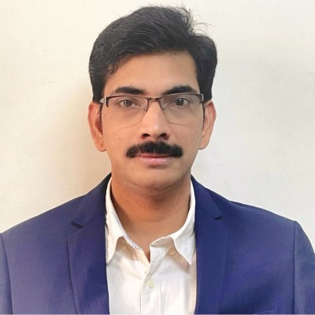

Senior IT Infrastructure & Digital Transformation Leader with 25+ years of experience across Teleperformance, IBM, TCS, and Satyam, specializing in enterprise technology operations, infrastructure services, and strategic IT leadership.
Current Role
Vice President – Information Technology
Teleperformance
Enterprise Infrastructure • Global Operations • Technology Leadership
Rama Kishore Vaddadi is a seasoned Information Technology executive with extensive experience in enterprise infrastructure management, digital transformation, and large-scale IT operations.
Over the course of his professional journey, he has worked with globally recognized organizations including Teleperformance, Tata Consultancy Services (TCS), IBM, and Satyam Computer Services.
His expertise spans enterprise technology governance, IT service delivery, cloud and infrastructure management, operational transformation, and strategic leadership across global technology environments.
LinkedIn: linkedin.com/in/rama-kishore-vaddadi-607aa120
Active in discussions related to AI, enterprise technology, digital transformation, infrastructure modernization, and operational governance.